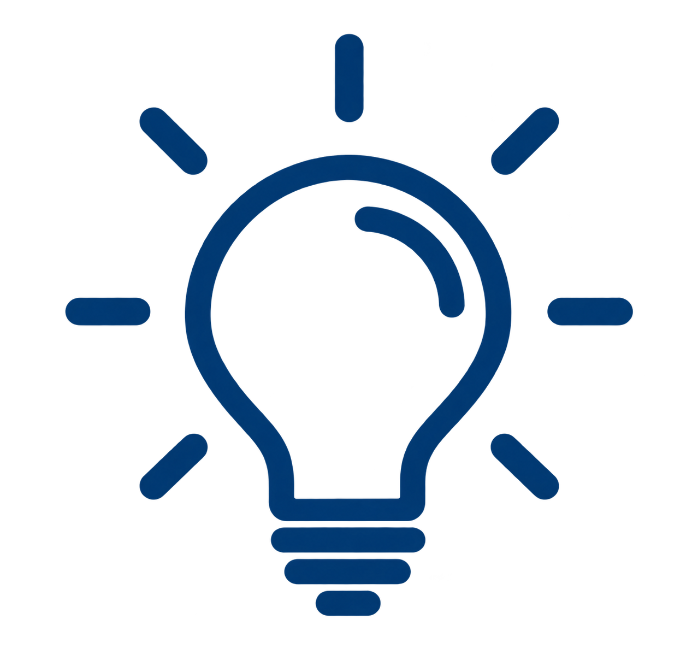

Ciclo de Vida
del Desarrollo
de Software
(SDLC)
El ciclo de vida del desarrollo de software (SDLC) es un proceso estructurado que define las etapas necesarias para desarrollar, entregar y mantener un software de calidad.

Cada etapa aporta valor y reduce riesgos en el desarrollo.
Planificar hoy, mejores soluciones mañana.
Etapas del SDLC
Requisitos
La etapa de Requisitos constituye la fase inicial fundamental del ciclo de vida, donde se recopilan, analizan y documentan detalladamente todas las expectativas, necesidades y restricciones del software expresadas por los clientes, usuarios finales y partes interesadas.
Entrevistar a los stakeholders y usuarios para identificar necesidades de negocio y funcionalidades requeridas.
Redactar la Documentación de Requisitos de Software (SRS - Software Requirements Specification) e historias de usuario.Analizar la viabilidad técnica, operativa, económica y legal del proyecto antes de iniciar la construcción.
Diseño
La fase de Diseño transforma los requisitos recopilados en una arquitectura técnica sólida y un plan detallado de construcción del sistema. En este punto se definen la estructura de software, la organización de los componentes internos, el esquema de la base de datos, los protocolos de integración mediante APIs y la interfaz de usuario.
Definir la arquitectura general del sistema (monolítica, microservicios, orientada a eventos, etc.).
Diseñar el esquema y modelo de la base de datos (entidad-relación, tablas o colecciones).
Crear prototipos interactivos, diagramas de flujo y esquemas de interfaz de usuario (UI/UX).

Desarrollo
La etapa de Desarrollo, también conocida como fase de codificación o implementación, es donde los programadores escriben el código fuente real del sistema siguiendo las especificaciones y diseños creados previamente. Durante este proceso, los ingenieros aplican buenas prácticas de programación, patrones de diseño y estándares de calidad para construir componentes modulares, legibles y eficientes.
Traducir las especificaciones de diseño en código fuente utilizando los lenguajes y frameworks seleccionados.
Realizar revisiones de código (code reviews) entre pares para mantener la consistencia y calidad.
Implementar pruebas unitarias para validar de forma aislada la lógica de cada nueva función o módulo.
Despliegue
La fase de Despliegue comprende la liberación y puesta en marcha del software en los entornos de producción para que esté disponible para los usuarios finales. Este proceso abarca desde la preparación de servidores y bases de datos hasta la configuración de entornos de nube y canales de integración/despliegue continuo (CI/CD).
Empaquetar y transferir los artefactos del software al entorno de producción o servidores en la nube.
Configurar servidores, bases de datos, redes, certificados SSL y variables de entorno finales.
Ejecutar pruebas de aceptación del usuario (UAT) y verificaciones rápidas tras el lanzamiento (smoke tests).

Pruebas
La etapa de Pruebas o Aseguramiento de la Calidad (QA) se enfoca en evaluar rigurosamente el software compilado para detectar y corregir defectos, vulnerabilidades de seguridad y fallos de rendimiento antes de su salida a producción.
Realizar pruebas de integración, sistema, regresión, rendimiento, carga y seguridad.
Reportar, clasificar y rastrear defectos en herramientas de gestión de incidencias (como Jira) hasta su resolución.
Validar que los errores reportados hayan sido corregidos exitosamente sin romper funcionalidades existentes.
Mantenimiento
La etapa de Mantenimiento comienza una vez que el software ya se encuentra operando en producción y se extiende a lo largo de todo su ciclo de vida útil. En esta fase se gestiona el monitoreo constante para corregir errores no detectados previamente, aplicar parches de seguridad, optimizar el rendimiento y desarrollar nuevas características adaptadas a la evolución de las necesidades del negocio o a cambios tecnológicos en el entorno.
Corregir errores residuales reportados por los usuarios finales en producción (mantenimiento correctivo).
Aplicar actualizaciones, parches de seguridad y mejoras técnicas en librerías o infraestructura (mantenimiento preventivo).
Modificar el sistema para adaptarlo a nuevos sistemas operativos, navegadores o normas legales (mantenimiento adaptativo).


.png)